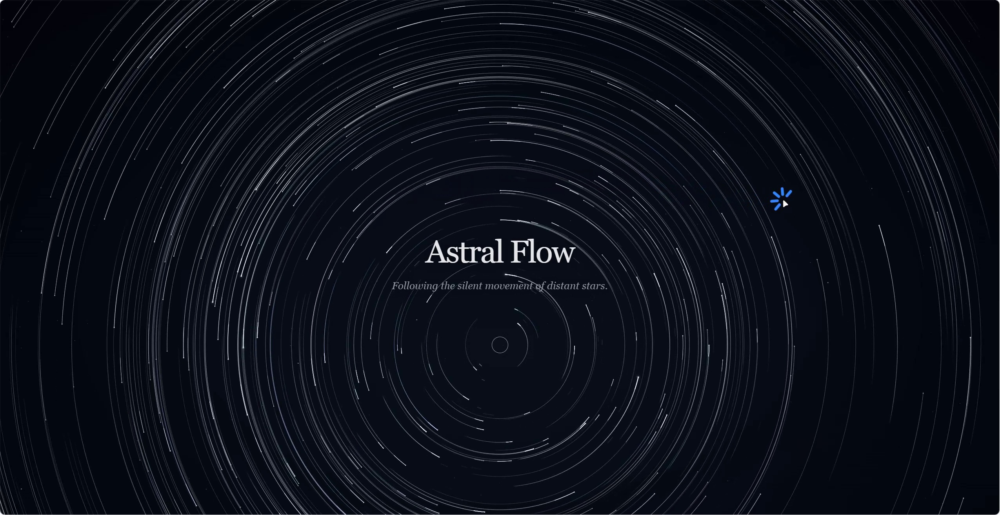
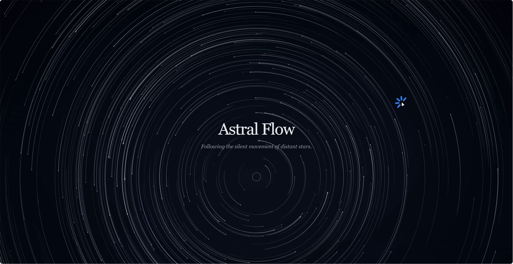
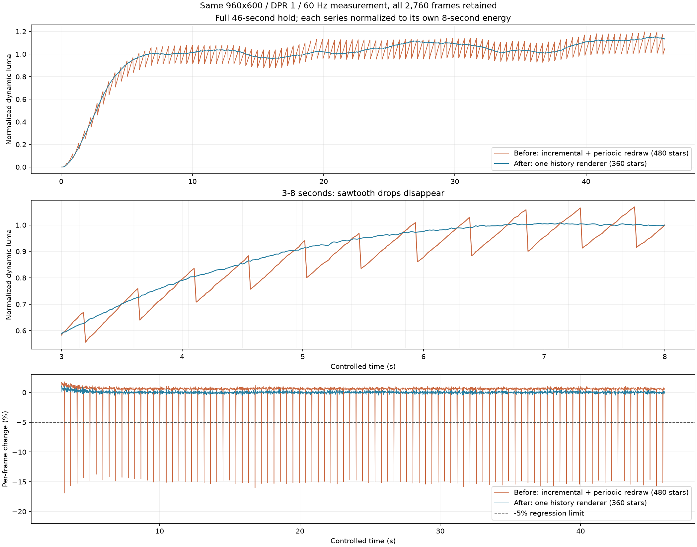
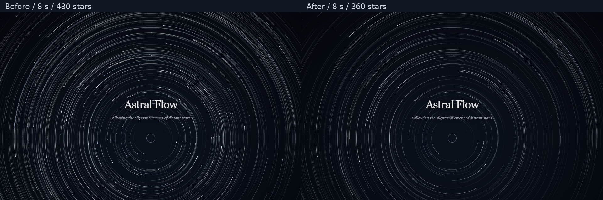
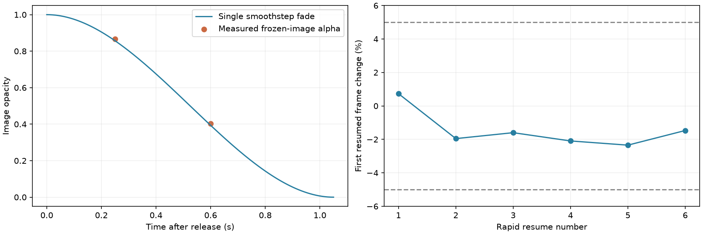
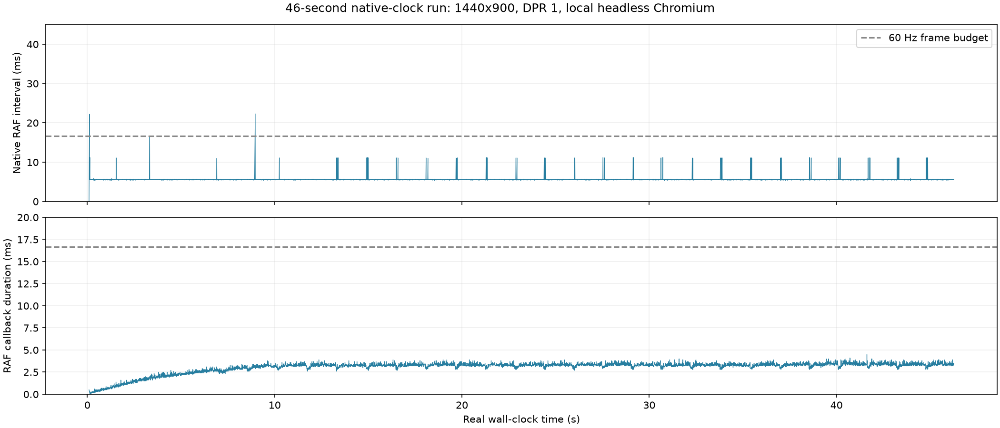
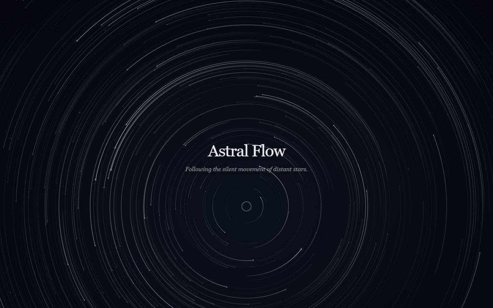
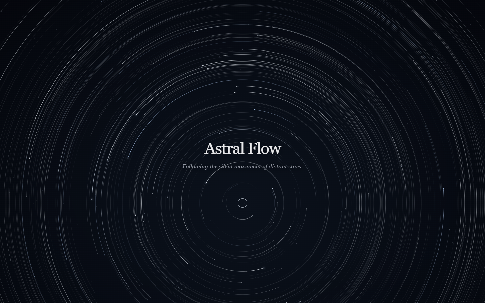

星轨闪烁：逐帧诊断与修复验收
本轮依据 prompt/prompt_02.txt、用户录屏和四张说明图片。对录屏的 全部 256 帧进行量测并检查全帧总览；对实际引擎另外连续采样 2,760 帧，覆盖 8、20、46 秒长按。页面记录数据与视觉证据，不把关键帧抽查表述为逐帧人工观看。
输入说明图片已原样保留：说明 1、验收重点、原亮度曲线、原相邻帧对照。


真实根因
旧版 StarTrailEngine.ts 平时以 source-over 叠加很多小段圆弧、用 destination-out 擦除；每隔 0.45 秒又清空画布，改用历史样本与 conic gradient 整弧绘制。这两套像素累积、重叠和衰减规则不等价。直接包裹旧重建函数，测量同一次调用前后，仍观察到约 15%–19% 的轨迹能量下降，证明问题发生在渲染策略内部。
新的每一帧始终由有界的真实角度、时间、曝光历史计算：alpha = recordedExposure × exp(-0.22 × age) × smoothstep((lifetime-age)/0.8)。连续的一条圆弧从有效最旧记录连接到实时角度，再独立绘制星头；没有周期性模型切换。30 Hz 历史采样间的实时末端也参与绘制。过期历史逐步剪除，46 秒后仍是有寿命的开放弧。
释放不再叠加多种衰减：冻结当前完整动态画面，按 1-smoothstep(elapsed/1.05) 整体淡出。释放期间暂停运动时间，续按从当前可见强度恢复旧历史和实时端点。桌面粒子从 480 调为 360，降低普通星的亮度、保留少数突出星体；文字、构图、冷白银灰方向及输入方式保持原样。
录屏：逐帧步进与完整数据
点击曲线或表格可跳帧；左右方向键逐帧步进。量测采用 850×438 面积缩采样，以首帧作静态基线，排除文字、圆环和录屏光标。它描述画面变化，不是原始按键事件日志。
| 帧 | 时间 | 动态亮度能量 | 相邻帧变化 |
|---|



查看全部 256 帧的八张总览
修复前后：连续 46 秒采样
旧引擎固定取自 1b1db04，新引擎为本轮实现。两者都在 960×600、DPR=1、60 Hz 下采样，每个渲染帧都记录时间、预乘 Alpha 的亮度能量、Alpha 总量和回调耗时。240×150 的像素读回在绘制计时之后执行；此受控时间实验用于稳定性，不作为真实 FPS 测量。
| 持续按压窗口 | 旧版最大单帧下降 | 新版最大单帧下降 | 旧版 / 新版超过 5% 的下降次数 |
|---|


旧版连续数据与重建前后归因 · 新版连续数据 · 验收摘要
释放、续按与长期稳定性

淡出和续按测试显式暂停测试时钟后逐步推进，避免像素读回、输入 IPC 自身让动画继续前进而污染相邻帧比较。像素拟合同时检查淡出比例和冻结形状；高 DPR 完全释放检查仍覆盖真实 backing-store 边缘。鼠标捕获、取消、失焦、切后台、窗口缩放、触摸、Space/Enter 与 reduced-motion 由浏览器用例覆盖。
真实时间 46 秒性能
| 真实时间窗口 | 原生 RAF 观测速率 | 回调耗时 P95 | 帧间隔 P95 |
|---|



全部原生帧时间与环境记录。此为本机 Windows 无头 Chromium 的观测，宿主 RAF 约 180 Hz；并非物理 60 Hz 屏幕验收，也不代表其他设备、Safari 或 Firefox。绘制回调耗时不等于完整 GPU 呈现耗时。统计排除三次截图前后各 0.25 秒，原始数据全部保留；实测不进行视频编码或逐帧读像素。
修复后的实际交互录制
复现与验证边界
启动 npm run dev 后，使用 node scripts/measure-stability.mjs before 重现旧版，npm test 运行回归并生成新数据，npm run benchmark:stability 做真实时间长按，npm run report:stability 更新图表。视频量测为 npm run analyze:flicker -- --video source/diagnostics/PixPin_2026-10-30_22-46-44.mp4。Python 分析需 OpenCV、NumPy、Pillow、Matplotlib；产品不依赖它们。
构建、完整测试结果与 Git 交付见 本轮验收记录。既有初版记录继续保留在 Git 历史，不把历史通过结果当成本轮验证。